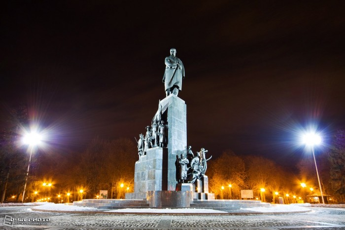

Сад Шевченка

Тихе, романтичне місце в центрі Харкова, куди приходять усамітнитися і відпочити. В саду знаходиться один з найвідоміших пам'ятників видатному українському письменнику Тарасу Шевченку. Там же розташований і пам'ятник футбольному м'ячу, улюблене місце всіх футбольних фанатів.